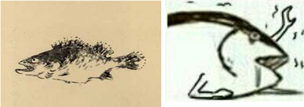
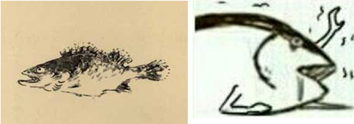

石刻壁画
表情包的发展是讯息沟通传播中的图像化表现，原始时期，没有发明文字的原始人类便用简单的绘画图案来记录事实或者陈述动作的行为，这种行为不限于地区或者民族，广泛的存在，如云南沧源石刻壁画，拉斯科洞窟壁画，原始人类用生动的抽象绘画记录下史前的历史片段。

云南沧源壁画，人的动作和活动的描绘
文字从图案中分离出来以后，绘画迅速成为了艺术形式的一种，而由于沟通方式的原因，绘画讲究技术和完整的表达，逐渐不再成为主流日常传播手段。
八大山人的鱼和现在的咸鱼表情有共通的萌点
表情包的发展是讯息沟通传播中的图像化表现，原始时期，没有发明文字的原始人类便用简单的绘画图案来记录事实或者陈述动作的行为，这种行为不限于地区或者民族，广泛的存在，如云南沧源石刻壁画，拉斯科洞窟壁画，原始人类用生动的抽象绘画记录下史前的历史片段。
云南沧源壁画，人的动作和活动的描绘
文字从图案中分离出来以后，绘画迅速成为了艺术形式的一种，而由于沟通方式的原因，绘画讲究技术和完整的表达，逐渐不再成为主流日常传播手段。
八大山人的鱼和现在的咸鱼表情有共通的萌点